정보처리기사(구) (2004-03-07 기출문제)
1과목: 데이터 베이스
1. 데이터베이스의 구조를 3단계로 구분할 때, 해당되지 않는 것은?
- 내부스키마
- 외부스키마
- 개념스키마
- 내용스키마
(정답률: 89%)

2. 릴레이션 R1에 저장된 튜플이 릴레이션 R2에 있는 튜플을 참조하려면 참조되는 튜플이 반드시 R2에 존재해야 한다는 데이터 무결성 규칙은?
- 개체 무결성 규칙(Entity Integrity Rule)
- 참조 무결성 규칙(Referential Integrity Rule)
- 영역 무결성 규칙(Domain Integrity Rule)
- 트리거 규칙(Trigger Rule)
(정답률: 87%)
3. 데이터 모델(data model)의 개념으로 가장 적절한 것은?
- 현실 세계의 데이터 구조를 컴퓨터 세계의 데이터 구조로 기술하는 개념적인 도구이다.
- 컴퓨터 세계의 데이터 구조를 현실 세계의 데이터 구조로 기술하는 개념적인 도구이다.
- 현실 세계의 특정한 한 부분의 표현이다.
- 가상 세계의 데이터 구조를 현실 세계의 데이터 구조로 기술하는 개념적인 도구이다.
(정답률: 79%)
4. 개체-관계(E-R) 모델에서 개체 타입을 표현하는 도형은?
- 삼각형
- 타원
- 사각형
- 마름모
(정답률: 75%)
5. 제 3정규형에서 보이스코드 정규형(BCNF)으로 정규화하기 위한 작업은?
- 원자값이 아닌 도메인을 분해
- 부분 함수 종속 제거
- 이행 함수 종속 제거
- 결정자가 후보키가 아닌 함수 종속 제거
(정답률: 73%)
6. 기본 테이블 R을 이용하여 뷰 V1을 정의하고, 뷰 V1을 이용하여 다시 뷰 V2가 정의되었다. 그리고 기본 테이블 R과 뷰 V2를 조인하여 뷰 V3를 정의하였다. 이때 다음과 같은 SQL 문이 실행되면 어떤 결과가 발생하는지 올바르게 설명한 것은?
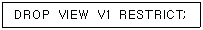
- V1만 삭제된다.
- R, V1, V2, V3 모두 삭제된다.
- V1, V2, V3만 삭제된다.
- 하나도 삭제되지 않는다.
(정답률: 39%)
7. 다양한 화일 조직 방법 중에서 응용에 적합한 화일 조직을 선택하는데 영향을 주는 요인들로만 구성된 것은?
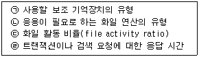
- (ㄱ) , (ㄴ) , (ㄷ) , (ㄹ)
- (ㄴ) , (ㄷ) , (ㄹ)
- (ㄱ) , (ㄴ) , (ㄷ)
- (ㄱ) , (ㄴ)
(정답률: 40%)
8. 데이터베이스의 뷰(view)에 관한 설명으로 옳지 않은 것은?
- 하나 이상의 테이블에서 유도되는 가상 테이블이다.
- 뷰 정의문 및 데이터가 물리적 구조로 생성된다.
- 뷰를 이용한 또 다른 뷰의 생성이 가능하다.
- 삽입, 갱신, 삭제 연산에는 제약이 따른다.
(정답률: 74%)
9. 아래 Tree 구조에 대하여 preorder 순서로 처리한 결과는?
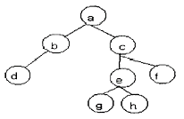
- a -> b -> d -> c -> e -> g -> h -> f
- d -> b -> g -> h -> e -> f -> c -> a
- a -> b -> c -> d -> e -> f -> g -> h
- a -> b -> d -> g -> e -> h -> c -> f
(정답률: 77%)
10. 데이터베이스에 관련된 용어의 설명으로 옳지 않은 것은?
- 튜플(tuple) - 테이블에서 열에 해당된다.
- 애트리뷰트(attribute) - 데이터의 가장작은 논리적 단위로서 파일 구조상의 데이터 항목 또는 데이터 필드에 해당한다.
- 릴레이션(relation) - 릴레이션 스키마와 릴레이션 인스턴스로 구성된다.
- 도메인(domain) - 애트리뷰트가 취할 수 있는 값들의 집합이다.
(정답률: 60%)
11. 관계형 데이터베이스에서 기본 테이블, 뷰, 인덱스, 데이터베이스, 응용계획, 패키지, 접근권한 등을 가지고 있는 것은?
- 사전(dictionary)
- 카탈로그(catalog)
- 레포지토리(repository)
- 스키마(schema)
(정답률: 51%)
12. 데이터베이스 설계시 다음 ( ) 안의 내용으로 옳은 것은?
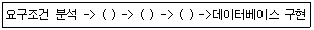
- 물리적 설계 --> 논리적 설계 --> 개념적 설계
- 개념적 설계 --> 논리적 설계 --> 물리적 설계
- 논리적 설계 --> 개념적 설계 --> 물리적 설계
- 논리적 설계 --> 물리적 설계 --> 개념적 설계
(정답률: 84%)
13. SQL에서 명령어 짝의 사용이 부적절한 것은?
- UPDATE... / SET...
- INSERT... / INTO...
- DELETE... / FROM...
- CREATE VIEW... / TO...
(정답률: 66%)
14. 데이터베이스 구성의 장점이 아닌 것은?
- 데이터 중복 최소화
- 여러 사용자에 의한 데이터 공유
- 데이터 간의 종속성 유지
- 데이터 내용의 일관성 유지
(정답률: 69%)
15. 다음 ( )에 적합한 단어는?
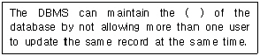
- independence
- integrity
- redundancy
- security
(정답률: 49%)
16. 분산 데이터베이스 시스템이 사용자에게 제공하는 4가지 유형의 투명성(Transparency)에 속하지 않는 것은?
- 위치 투명성
- 복제 투명성
- 수행 투명성
- 병행 투명성
(정답률: 39%)
17. 트랜잭션(Transaction)은 보통 일련의 연산 집합이란 의미로 사용하며 하나의 논리적 기능을 수행하는 작업의 단위이다. 트랜잭션이 가져야 할 특성으로 거리가 먼 것은?
- 원자성(Atomity)
- 격리성(Isolation)
- 영속성(Durability)
- 병행성(Concurrency)
(정답률: 70%)
18. 스택(Stack)의 응용에서 다음의 수식을 후위 표기법으로 표기시 옳은 것은?
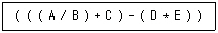
- A / B + C - D * E
- AB / C + DE * -
- A / B + C - * DE
- AB / C + - DE *
(정답률: 54%)
19. 버킷(bucket)과 가장 관련이 깊은 것은?
- SAM
- ISAM
- B-Tree
- Hashing
(정답률: 69%)
20. 다음 문장이 설명하는 것은?
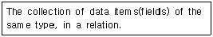
- Entity
- Attribute
- Relation
- Domain
(정답률: 38%)
2과목: 전자 계산기 구조
21. 0-번지(zero-address) 명령형을 갖는 컴퓨터 구조의 원리는 어느 것을 사용하는가?
- accumulator extension register
- virtual memory architecture
- stack architecture
- micro-programming
(정답률: 64%)
22. 다음 설명 중 옳지 않은 것은?
- PC는 다음에 실행할 번지를 갖고 있는 레지스터이다.
- 제어 신호는 마이크로 동작이 순서적으로 일어나게 한다.
- fetch 사이클은 CPU가 메모리에서 명령을 가져오는 사이클이다.
- CPU의 제어 장치는 명령 레지스터와 신호 발생장치만으로 구성되어 있다.
(정답률: 70%)
23. 리커션(recursion) 프로그램에 해당하는 것은?
- 한 루틴(routine)이 반복될 때
- 한 루틴(routine)이 자기를 다시 부를 때
- 다른 루틴(routine)이 다른 루틴을 부를 때
- 한 루틴(routine)에서 다른 루틴으로 갈 때
(정답률: 71%)
24. 반드시 누산기가 필요한 주소지정방식은?
- 0-Address 주소지정방식
- 1-Address 주소지정방식
- 2-Address 주소지정방식
- 3-Address 주조지정방식
(정답률: 59%)
25. 다음 설명 중 부프로그램과 매크로(Macro)의 공통점은?
- 삽입하여 사용한다.
- 분기로 반복을 한다.
- 다른 언어에서도 사용한다.
- 여러 번 중복되는 부분을 별도로 작성하여 사용한다.
(정답률: 64%)
26. 연관 메모리(associative memory)의 특징이 아닌 것은?
- 주소 매핑(mapping)
- 내용 지정 메모리(CAM)
- 메모리에 저장된 내용에 의한 access
- 기억장치에 저장된 항목을 찾는 시간 절약
(정답률: 46%)
27. 기억장치가 아닌 것은?
- 자기 드럼 장치
- 자기 디스크 장치
- 자기 테이프 장치
- 자기 잉크 문자 읽어내기 장치
(정답률: 74%)
28. 인터럽트의 발생 원인으로 적당하지 않은 것은?
- SuperVisor Call
- 정전
- 분기 명령의 실행
- 데이터 에러
(정답률: 52%)
29. 8진수 0.54를 십진수로 나타내면?
- 0.6875
- 0.8756
- 0.7568
- 0.5687
(정답률: 51%)
30. 가상기억장치(virtual memory)의 특징이 아닌 것은?
- 컴퓨터의 용량을 확장하기 위한 방법이다.
- 가상기억공간의 구성은 프로그램에 의해서 수행된다.
- 가상기억장치의 목적은 기억공간이 아니라 속도이다.
- 주기억장치와 보조기억장치가 계층 기억 체제를 이루고 있다.
(정답률: 59%)
31. 하드웨어의 특성 상 주기억장치가 제공할 수 있는 정보 전달의 능력 한계를 무엇이라 하는가?
- 주기억장치 밴드폭
- 주기억장치 접근률
- 주기억장치 접근 실패
- 주기억장치사용의 편의성
(정답률: 74%)
32. 컴퓨터의 윈도우 창에 여러 윈도우를 열어놓고 작업하는 것을 주기억장치 처리 방법으로 무엇이라 하는가?
- 보조 프로그램
- 멀티프로세싱
- 멀티프로그래밍
- 리얼타임 프로그램
(정답률: 41%)
33. 인터럽트 요인이 발생했을 때 CPU의 상태를 확인해야 하는데 해당되지 않는 것은?
- 프로그램 카운터의 내용
- 플래그 상태 조건 내용
- 모든 레지스터의 내용
- CPU의 수행 속도
(정답률: 55%)
34. 소프트웨어에 의하여 우선순위를 판별하는 방법을 무엇이라 하는가?
- 데이지체인
- 폴링
- 핸드셰이킹
- 인터럽트 벡터
(정답률: 65%)
35. 하드웨어 우선순위 인터럽트의 특징은?
- 가격이 싸다.
- 응답속도가 빠르다.
- 유연성이 있다.
- 우선순위는 소프트웨어로 결정한다.
(정답률: 64%)
36. 논리마이크로 연산에 있어서 레지스터 A와 B의 값이 단서와 같이 주어졌을 때 selective-set 연산을 수행하면 어떻게 되는가?(단, A는 프로세서 레지스터이고, B는 논리 오퍼랜드, A=1010, B=0011)
- 1100
- 1011
- 0011
- 1010
(정답률: 55%)
37. 주기억장치에 기억된 명령을 꺼내서 해독하고, 시스템 전체에 지시 신호를 내는 것은?
- channel
- ALU
- control unit
- I/O unit
(정답률: 55%)
38. Half - Adder는 2bit(x,y)를 산술적으로 가산하는 조합회로이며, 이에 해당하는 진리표는 이래와 같다. 캐리(c)와 합(s)를 논리적으로 구한 것은?
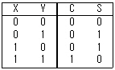
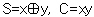
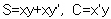
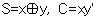
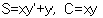
(정답률: 69%)
39. 데이터 입출력 전송이 CPU를 통하지 않고 직접 주기억 장치와 주변장치 사이에서 수행되는 방식은?
- Bus
- DMA
- Cache
- Interleaving
(정답률: 61%)
40. 스택 메모리에 대한 정보의 입출력 방식은?
- FIFO
- FILO
- LILO
- LIFO
(정답률: 49%)
3과목: 운영체제
41. 시스템을 설계할 때 최적의 페이지 크기에 관한 결정이 이루어져야만 한다. 페이지 크기에 관한 설명으로 옳지 않은 것은?
- 페이지 크기가 크면 페이지 테이블 공간은 증가한다.
- 입출력 전송시 큰 페이지가 더 효율적이다.
- 페이지 크기가 클수록 디스크 접근 시간 부담이 감소된다.
- 페이지 크기가 작으면 페이지 테이블의 단편화가 발생한다.
(정답률: 38%)
42. 운영체제의 운영 방식에 관한 설명으로 옳지 않은 것은?
- 하나의 컴퓨터 시스템에서 여러 프로그램들이 주기억장치에 적재되고 이들이 처리장치를 번갈아 사용하며 실행하도록 하는 것을 다중프로그래밍(Multiprogramming)개념이라고 한다.
- 한대의 컴퓨터를 동시에 여러 명의 사용자가 대화식으로 사용하는 방식으로 처리속도가 매우 빨라 사용자는 독립적인 시스템을 사용하는 것으로 인식하는 것을 배치처리(Batch Processing)라고 한다.
- 한 대의 컴퓨터에 중앙처리장치가 2개 이상 설치되어 여러 명령을 동시에 처리하는 것을 다중프로세싱(Multiprocessing) 방식이라고 한다.
- 여러 대의 컴퓨터들에 의해 작업들을 나누어 처리하여 그 내용이나 결과를 통신망을 이용하여 상호 교환되도록 연결되어 있는 것을 분산처리(Distributed Processing) 시스템이라고 한다.
(정답률: 60%)
43. 하나의 프로세스가 작업 수행 과정에서 수행하는 기억 장치 접근에서 지나치게 페이지 폴트가 발생하여 프로세스 수행에 소요되는 시간보다 페이지 이동에 소요되는 시간이 더 커지는 현상은?
- 스레싱(thrashing)
- 워킹세트(working set)
- 세마포어(semaphore)
- 교환(swapping)
(정답률: 76%)
44. 유닉스의 파일 시스템에서 슈퍼블럭(superblock)에 대한 설명으로 옳지 않은 것은?
- 사용가능한 i-node의 개수를 알 수 있다.
- 부트 스트랩시에 사용되는 코드를 갖고 있다.
- file 시스템마다 각각의 슈퍼블럭을 가지고 있다.
- 사용 가능한 디스크 블럭의 개수를 알 수 있다.
(정답률: 39%)
45. 파일 구성 방식 중 ISAM(Indexed Sequential Access - Method)의 물리적인 색인 구성은 디스크의 물리적 특성에 따라 색인(index)을 구성하는데, 다음 중 3단계 색인에 해당되지 않는 것은?
- 실린더 색인(cylinder index)
- 트랙 색인(track index)
- 마스터 색인(master index)
- 볼륨 색인(volume index)
(정답률: 64%)
46. 한 프로세스가 공유 메모리 혹은 공유 파일을 사용하고 있을 때 다른 프로세스들이 사용하지 못하도록 배제시키는 제어 기법을 무엇이라고 하는가?
- Deadlock
- Mutual Exclusion
- Interrupt
- Critical Section
(정답률: 41%)
47. SJF 방식의 단점을 보완하기 위해 대기시간을 고려한 프로세스의 응답률로 프로세스의 우선순위를 결정하는 프로세스 스케줄링 방법은?
- 우선순위(Priority) 스케줄링
- 다단계큐(Multilevel Feedback Queue) 스케줄링
- HRN 스케줄링
- Round-Robin 스케줄링
(정답률: 63%)
48. 프로세스(Process)의 정의에 대한 설명 중 옳지 않은 것은?
- 동기적 행위를 일으키는 주체
- 실행중인 프로그램
- 프로시저의 활동
- 운영체제가 관리하는 실행 단위
(정답률: 62%)
49. 병렬 처리 시스템의 형태 중 분리수행(Separate - Execution)의 설명으로 틀린 것은?
- 한 프로세서의 장애는 전 시스템에 영향을 미치지 않는다.
- 하나의 주프로세서와 나머지 종프로세서로 구성된다.
- 프로세서별 자신만의 파일 및 입출력장치를 제어한다.
- 프로세서별 인터럽트는 독립적으로 수행된다.
(정답률: 43%)
50. 절대로더에서의 각 기능과 수행 주체의 연결이 옳지 않은 것은?
- 연결 - 로더
- 재배치 - 어셈블러
- 적재 - 로더
- 기억장소할당 - 프로그래머
(정답률: 42%)
51. 프로세스가 자원을 기다리고 있는 시간에 비례하여 우선순위를 부여함으로써 무기한 문제를 방지하는 기법은?
- 노화(aging) 기법
- 재사용(reusable) 기법
- 환형대기(circular wait)
- 치명적인 포옹(deadly embrace)
(정답률: 55%)
52. UNIX 시스템의 구조 중 사용자와 직접 대화하는 시스템의 한 부분으로, 사용자의 명령을 입력으로 받아 시스템 기능을 수행하는 명령 해석기 역할을 하는 계층은 어느 것인가?
- 커널(kernel)
- 셸(shell) 프로그램
- 기억장치 관리기
- 스케줄러(scheduler)
(정답률: 63%)
53. 매크로 프로세스가 수행해야 하는 기본적인 기능에 해당하지 않는 것은?
- 매크로 구문 인식
- 매크로 호출 인식
- 매크로 정의 인식
- 매크로 정의 저장
(정답률: 44%)
54. 한 프로세스에서 사용되는 각 페이지마다 시간 테이블을 두어 현 시점에서 가장 오랫동안 사용되지 않은 페이지를 교체하는 알고리즘은?
- LFU
- FIFO
- LRU
- NUR
(정답률: 57%)
55. 디스크 스케줄링에서 SCAN 기법을 사용할 경우, 다음과 같은 작업대기 큐의 작업들을 수행하기 위한 헤드의 총 트랙 이동 거리는?(단, 초기 헤드의 위치는 30이고, 현재 0번 트랙으로 이동 중이다.)
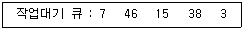
- 39
- 59
- 70
- 151
(정답률: 54%)
56. SSTF 기법을 사용하는 경우, 헤드의 현재 위치가 53 트랙이고(그 이전의 위치는 59 트랙이었음), 요구 큐에는 [ 98,180, 37, 64, 10, 28 ]의 트랙번호가 저장되어 있다. 헤드는 몇 번 트랙으로 이동하겠는가?
- 10
- 28
- 37
- 64
(정답률: 53%)
57. 디렉토리 구조 중 가장 간단한 형태로 같은 디렉토리에 시스템에 보관된 모든 파일 정보를 포함하는 구조는?
- 일단계 디렉토리
- 트리 구조 디렉토리
- 이단계 디렉토리
- 비주기 디렉토리
(정답률: 65%)
58. 운영체제에서 커널의 기능이 아닌 것은?
- 프로세스 생성, 종료
- 사용자 인터페이스
- 기억 장치 할당, 회수
- 파일 시스템 관리
(정답률: 59%)
59. UNIX 에서 파일의 조작을 위한 명령어가 아닌 것은?
- cp
- mv
- ls
- rm
(정답률: 66%)
60. UNIX에서 파일 모드가 다음과 같을 때, 옳은 설명은?
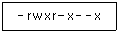
- 디렉토리 파일이다.
- 입출력장치 화일이다.
- 어떤 사용자라도 실행시킬 수 있다.
- 어떤 사용자라도 파일의 읽기가 가능하다.
(정답률: 47%)
4과목: 소프트웨어 공학
61. 소프트웨어 구조와 관련된 용어로, 주어진 한 모듈(module)을 제어하는 상위 모듈 수를 나타내는 것은?
- Modularity
- Subordinate
- Fan-in
- Superordinate
(정답률: 40%)
62. 상향식 통합 테스트(Bottom-Up Integration Test)의 과정이 옳게 나열된 것은?
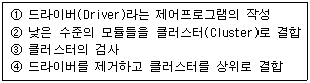
- ①→②→③→④
- ②→①→③→④
- ②→③→①→④
- ①→②→④→③
(정답률: 32%)
63. 좋은 모듈이 되기 위한 응집도와 결합도에 대한 설명으로 옳은 것은?
- 모듈의 응집도와 결합도 모두가 높아야 한다.
- 모듈의 응집도는 높아야 하고 결합도는 낮아야 한다.
- 모듈의 응집도는 낮아야 하고 결합도는 높아야 한다.
- 모듈의 응집도와 결합도 모두가 낮아야 한다.
(정답률: 66%)
64. 객체지향 시스템에서 자료부분과 연산(또는 함수)부분 등 정보처리에 필요한 기능을 한 테두리로 묶는 것을 무엇이라고 하는가?
- 정보 은닉(information hiding)
- 클래스(class)
- 캡슐화(encapsulation)
- 통합(integration)
(정답률: 63%)
65. 객체지향 기법에서 상속(inheritance)의 결과로서 얻을 수 있는 가장 주요한 이점은?
- 모듈 라이브러리(Library)의 재이용
- 객체지향 DB를 사용할 수 있는 능력
- 클래스와 오브젝트들을 재사용할 수 있는 능력
- 프로젝트들을 보다 효과적으로 관리할 수 있는 능력
(정답률: 62%)
66. 자료사전(DD)에서 하나 이상의 선택이 필요할 때 사용하는 기호는?
- ( )
- { }
- [ ]
- < >
(정답률: 53%)
67. 실제 상황이 나오기 전에 가상으로 시뮬레이션을 통해 최종 결과물에 대한 예측을 할 수 있는 소프트웨어 수명 주기 모형은?
- 점증적 모형(incremental model)
- 프로토타이핑 모형(prototyping model)
- 코코모 모형(cocomo model)
- 폭포수 모형(waterfall model)
(정답률: 74%)
68. 프로그램을 구성하는 기능을 기술한 것으로 입력, 처리, 출력을 기술하는 HIPO 패키지에 해당하는 것은?
- Overview Diagram
- Detail Diagram
- Visual Table of Contents
- Index Diagram
(정답률: 38%)
69. 형상관리(configuration management)의 관리 항목으로 거리가 먼 것은?
- 정의 단계의 문서
- 개발 단계의 문서와 프로그램
- 유지보수 단계의 변경 사항
- 소프트웨어 개발 비용
(정답률: 69%)
70. 프로젝트 관리의 대상으로 거리가 먼 것은?
- 비용관리
- 일정관리
- 고객관리
- 품질관리
(정답률: 63%)
71. 소프트웨어의 재사용으로 얻어지는 이익이 아닌 것은?
- 표준화의 원칙을 무시할 수 있다.
- 프로젝트의 개발 위험을 줄여줄 수 있다.
- 프로젝트의 개발기간과 비용을 줄일 수 있다.
- 개발자의 생산성을 향상시킬 수 있다.
(정답률: 75%)
72. 객체지향 소프트웨어 개발모형의 개발 단계로 옳은 것은?
- (ㄷ) → (ㄱ) → (ㄹ) → (ㄴ) → (ㅁ)
- (ㄷ) → (ㄹ) → (ㄴ) → (ㄱ) → (ㅁ)
- (ㄷ) → (ㄴ) → (ㄹ) → (ㄱ) → (ㅁ)
- (ㄷ) → (ㄹ) → (ㄱ) → (ㄴ) → (ㅁ)
(정답률: 67%)
73. 객체 지향 개념 중 하나 이상의 유사한 객체들을 묶어 공통된 특성을 표현한 데이터 추상화를 의미하는 것은?
- 메소드(method)
- 클래스(class)
- 상속성(inheritance)
- 추상화(abstraction)
(정답률: 53%)
74. 소프트웨어 품질 측정의 항목으로 거리가 먼 것은?
- 정확성
- 무결성
- 간결성
- 사용성
(정답률: 58%)
75. 소프트웨어 라이프사이클 단계 중 가장 오랜 시간이 걸리며 대부분의 비용을 차지하는 단계는?
- 타당성 검토단계
- 운용 및 유지보수 단계
- 기본설계 단계
- 실행단계
(정답률: 72%)
76. 자료흐름도(DFD : Data Flow Diagram)의 구성요소 중 자료출처와 도착지를 나타내는 기호는?
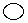
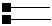
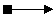
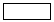
(정답률: 47%)
77. 자료흐름도(DFD)의 작성 지침이라고 볼 수 없는 것은?
- 자료는 처리를 거쳐 변환될 때마다 새로운 명칭을 부여해야 한다.
- 자료흐름도의 최하위 처리는 소단위명세서를 갖는다.
- 배경도(context diagram)에도 명칭과 번호를 부여해야 한다.
- 어떤 처리(process)가 출력자료를 산출하기 위해서는 필요한 자료가 반드시 입력되어야 한다.
(정답률: 31%)
78. 소프트웨어 공학의 기본 원칙이라고 볼 수 없는 것은?
- 현대적인 프로그래밍 기술 적용
- 지속적인 검증 시행
- 결과에 대한 명확한 기록 유지
- 충분한 인력 투입
(정답률: 56%)
79. 응집력이 강한 것부터 약한 순서로 옳게 나열된 것은?
- sequential→functional→procedural→coincidental→logical
- procedural→coincidental→functional→sequential→logical
- functional→sequential→procedural→logical→coincidental
- logical→coincidental→functional→sequential→procedural
(정답률: 45%)
80. COCOMO의 비용 산정에 의해 개발에 소요되는 노력이 40PM(Programmer-Month)으로 계산되었다. 개발에 소요되는 기간이 5개월이고, 1인당 인건비가 100만원이라면 이 프로젝트에 소요되는 총 인건비는 얼마인가?
- 2억원
- 1억원
- 4천만원
- 2천만원
(정답률: 34%)
5과목: 데이터 통신
81. 패킷 교환망의 기능 중 경로배정 방법이 아닌 것은?
- 고정경로 배정 방식
- 우회경로 배정 방식
- 플러딩 방식
- 적응경로 배정 방식
(정답률: 33%)
82. 제시한 OSI 7계층 중에서 제일 상위 계층은?
- 세션 계층
- 네트워크 계층
- 트랜스포트 계층
- 데이터링크 계층
(정답률: 62%)
83. LAN 간의 인터네트워킹 연결 장치로 제 2계층에서 동작하는 장비는?
- 리피터
- 브리지
- 프로토콜 번역기
- 게이트웨이/라우터
(정답률: 41%)
84. PCM 방식의 변조 순서로서 옳은 것은?
- 신호→ 양자화→ 표본화→ 부호화
- 신호→ 표본화→ 양자화→ 부호화
- 신호→ 부호화→ 표본화→ 양자화
- 신호→ 표본화→ 부호화→ 양자화
(정답률: 56%)
85. 다음 아래 두 코드의 해밍 거리(Hamming Distance)는 얼마인가?
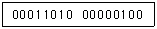
- 4
- 5
- 6
- 7
(정답률: 45%)
86. 부가가치통신망(VAN)의 통신처리 기능에 포함되지 않는 것은?
- 데이터 전송 기능
- 전자사서함 기능
- 프로토콜 변환 기능
- 동보통신 기능
(정답률: 17%)
87. 음성 전화망과 같이 메시지가 전송되기 전에 발생지에서 목적지까지의 물리적 통신 회선 연결이 선행되어야 하는 교환 방식은?
- 메시지 교환 방식
- 데이터그램 방식
- 회선교환 방식
- ARQ 방식
(정답률: 65%)
88. 이중나선(Twistedpair wire)형 전송회선의 특징으로 볼 수 없는 것은?
- PC용 LAN에서 주로 사용된다.
- 고속 전송이 어렵다.
- 넓은 대역폭을 제공하고 전송속도가 15Mbps 이상이다.
- 두 줄의 전선을 꼬아 놓은 케이블 형태이다.
(정답률: 42%)
89. IP 주소에서 1개의 C-class는 32비트의 길이로 8비트 호스트 식별자를 갖는다. 이 때 최대 몇 개의 호스트 주소를 가질 수 있는가?
- 128개
- 254개
- 1024개
- 4096개
(정답률: 58%)
90. TCP/IP의 계층이 아닌 것은?
- 응용 계층
- 네트워크 계층
- 세션 계층
- 전송 계층
(정답률: 39%)
91. 흐름제어는 슬라이딩 윈도우 방식을 주로 사용한다. 이때 윈도우에 대한 올바른 설명은?
- 프로그램 처리 버퍼의 반도체 갯수
- 전송할 수 있는 프레임의 갯수
- 에러제어 복구 가능 횟수
- 운영체제의 버전 정보
(정답률: 68%)
92. 다수의 타임 슬롯으로 하나의 프레임이 구성되고, 각 타임 슬롯에 채널을 할당하여 다중화 하는 것은?
- TDMA
- CDMA
- FDMA
- CSMA
(정답률: 61%)
93. 다음 다중화 기법 중 TV 공중파와 관련이 있는 것은?
- CDM
- FDM
- TDM
- PDM
(정답률: 45%)
94. 수신측에서 에러 점검 후 제어 신호를 보내올 때까지 오버헤드(overhead)가 효율면에서 가장 부담이 큰 것은?
- 연속적 ARQ(Continuous Automatic Repeat Request)
- 적응적 ARQ(Adaptive Automatic Repeat Request)
- 블록 연속 전송 ARQ(Go back-N Automatic Repeat Request)
- Stop-and-Wait ARQ
(정답률: 46%)
95. 다른 네트워크 또는 같은 네트워크를 연결하여 그 중추역할을 하는 네트워크로 보통 인터넷의 주가 되는 기간 망을 일컫는 용어는?
- Gateway
- Backbone
- DNS
- IDSN
(정답률: 32%)
96. 라우팅 프로토콜이 아닌 것은?
- BGP(Border Gateway Protocol)
- EGP(Exterior Gateway Protocol)
- SNMP(Simple Network Management Protocol)
- RIP(Routing Information Protocol)
(정답률: 60%)
97. 데이터를 전송하는데 있어서 정보 전달 방향이 교대로 바뀌어 전송되는 통신 방법은?
- 반이중 통신
- 전이중 통신
- 단방향 통신
- 시분할 통신
(정답률: 59%)
98. 디지털 데이터를 아날로그 신호로 변환하는 변조 기법과 관련이 없는 것은?
- ASK
- PSK
- FSK
- PCM
(정답률: 65%)
99. 송신 요구를 먼저한 쪽이 송신권을 갖는 방식을 무엇이라 하는가?
- Contention 방식
- Polling 방식
- Selecting 방식
- Routing 방식
(정답률: 37%)
100. 통계적 시분할 다중화 기법의 장점이 아닌 것은?
- 낭비되는 슬롯을 전송하지 않기 때문에 채널의 낭비를 줄인다.
- 동기식 다중화기보다 더 높은 전송 효율을 가진다.
- 각 터미널들의 전송량과 관계없이 일정한 지연 시간을 가진다.
- 같은 속도일 경우 동기식 다중화기보다 더 많은 수의 터미널을 접속할 수 있다.
(정답률: 53%)
내부스키마는 데이터베이스의 물리적인 구조를 정의하고, 외부스키마는 사용자나 응용 프로그램이 접근할 수 있는 데이터베이스의 논리적인 구조를 정의한다. 개념스키마는 데이터베이스 전체의 논리적인 구조를 정의한다.
하지만 내용스키마는 데이터베이스의 구조를 4단계로 구분할 때 사용되는 용어이다. 내용스키마는 개념스키마와 내부스키마 사이에 위치하며, 데이터베이스의 구체적인 내용을 정의한다. 즉, 데이터베이스에 저장되는 실제 데이터의 구조와 형식을 정의하는 역할을 한다.